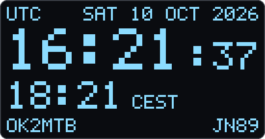

microHAMCLOCK
A pocket-sized ham radio clock that shows who is hearing you, right now.

01
Install
Connect the Heltec WiFi LoRa 32 V3 with a USB-C cable, click Install and pick its serial port (usually “CP210x” or “USB to UART”). It takes about a minute.
Updating? Your settings are kept unless you choose to erase the device.
02
Set up
Enter your Wi-Fi, callsign and locator here, over the same USB cable. Close the installer window first. You can also set up the board later from your phone: hold PRG for 10 seconds and join the MICROHAMCLOCK-xxxx hotspot.
- Saved, restarting
- Connecting to Wi-Fi
- Getting the time
- Listening for spots
All set! Your microHAMCLOCK is running. You can unplug it from the
computer and power it from any USB charger.
?
Good to know
- No port in the list? Close any serial monitor that may be using it, try another cable (some only charge), or install the CP210x driver.
- Install doesn't start? Hold PRG, tap RST, release PRG, and click Install again.
- More settings (screen saver, night mode, brightness, NVIS, ionosonde) are on the hotspot setup page: hold PRG for 10 seconds.